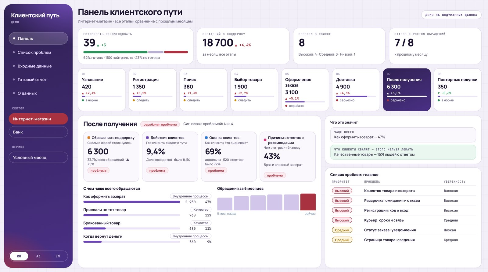

Разбираем процесс
Какие данные поступают и что делает сотрудник.
AI-автоматизация
Разберу процесс: какие данные поступают, что делает сотрудник и какой результат нужен. Определю, где полезен AI, где достаточно обычной автоматизации и что должен проверять человек.
Для начала опишите повторяющуюся задачу — техническое задание не нужно.
01
Какие данные поступают и что делает сотрудник.
Что считаем успешным результатом.
Один сценарий, один процесс.
Человек проверяет то, что сделал AI.
Масштабировать, доработать или остановиться.
02
Нажмите на карточку, чтобы открыть подробности.
AI-инструмент для исследовательских задач: от вопроса до отчёта.
Подробнее ↗Собственная разработка
Система мониторинга удовлетворённости клиентов по этапам их пути.
Подробнее ↗Для e-commerceИз одного фото товара — набор изображений для карточки маркетплейса.
Подробнее ↗Контакты
Расскажите об этом на бесплатном 30-минутном созвоне — определим, что можно передать AI.
Обсудить процесс ↗Или напишите напрямую